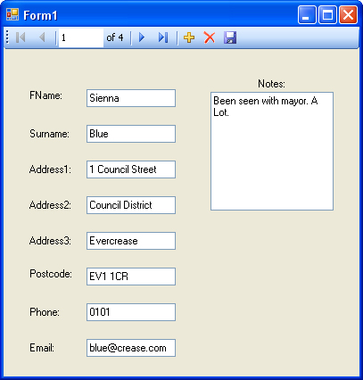

Visual Basic Express and Databases - the easy way
For this tutorial, we're going to create a simple Address Book project. The names and addresses will come from a Microsoft Access database. Download the database before starting these lessons. Once you have saved the database to your own computer, you can begin.
Download the Microsoft Access Database you need for these tutorials
VB.Net allows you many ways to connect to a database or a data source. The technology used to interact with a database or data source is called ADO.NET. The ADO parts stands for Active Data Objects which, admittedly, doesn’t explain much. But just like System was a Base Class (leader of a hierarchy, if you like), so is ADO. Forming the foundation of the ADO Base Class are five other major objects:
Connection
Command
DataReader
DataSet
DataAdapter
We'll see just what these objects are, and how to use them, in a later section. But we can make a start on the ADO.NET trail by creating a simple Address Book project. All we’ll do is see how to use ADO to open up the database you downloaded, and scroll through each entry.
What we’re going to be doing is to use a Wizard to create a programme that reads the database and allows us to scroll through it. The wizard will do most of the work for us, and create the controls that allow users to move through the database. The Form we create will look like this when it's finished:

By clicking the buttons at the top, you can scroll through the database in the
image above. We'll make a start in the next part.